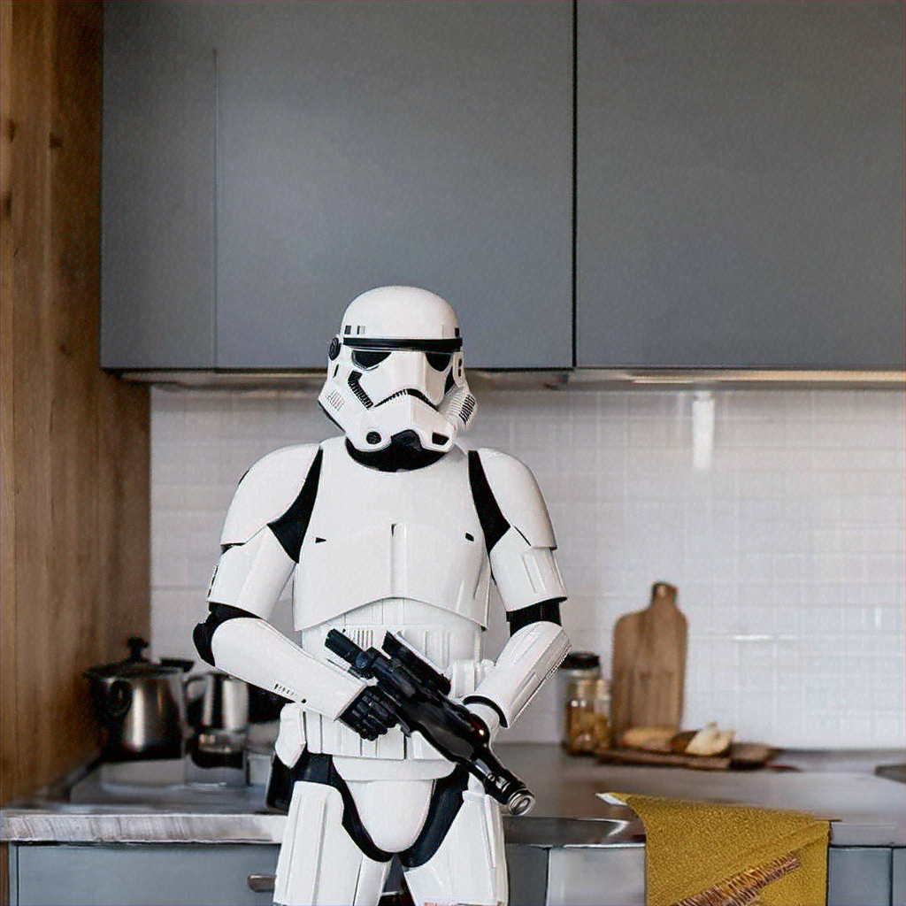

SCC
Brasil
os cloud gurus
Software Cloud Consulting
Your software development, cloud, consulting & shoring company
Amazon Bedrock - Titan Image Generator
By Wolfgang Unger
Introduction
How to get started with Amazon Bedrock?
Amazon Bedrock among other AI services was announced quite strong on the last Re-Invent, so time
to have a closer look on the
new service.
This is a short tutorial on how to use Titan Image Generator.
See also this video in my youtube channel :
Amazon Bedrock & Titan Image Generator
Get started
When you open the Bedrock Console you can choose between a couple of different Providers, like AI21 Labs, Amazon, Anthropic, Cohere, Meta and Stability AI.
We will try to use Titan Image Generator to create an edit some AI images.
But please feel free to use the Provider of your choice.
First you have to request Model access, once done you can start to work with this Provider.
I have requested Titan Image Generator, so lets know switch to Playgrounds and Images.
Image Generation
Lets try to create our first AI image.

The Generate Mode is pre-selected, we can keep this.
Below are some options for the generated image, like size and quality and number of generated images.
I will set this to one instead of three.
On the prompt at the bottom I will enter: A lion on a rock
After some seconds we get this result :
Well, quite nice for our first try.
Check out some other prompts at your own.
Now I will make a small change and enter: A lion on a rocket.
The result is:
Interesting, Titan decided, a lion on a rocket should not be realistic.
I am a big Star Wars Fan, so what about this:
Darth Vader in a Kitchen
I recieve this error:
"This request has been blocked by our content filters. Our filters automatically flagged this prompt because it may conflict
our AUP or AWS Responsible AI Policy. Please adjust your text prompt to submit a new request"
So, we cannot generate Darth Vader, what about a stormtropper?
Prompt: A stormtropper in a kitchen:
Looks like a stormtropper is no problem for the AI policy, but Darth Vader is ... Strange
Time to try a real world example, I would like to update the background image of this website.
It is a Laptop with blue colors, the RGB colors are more or less (30,32,101).
So my prompt is : a blue sky with clouds in RGB colors 30,32,101
The result is:
As you can see, the colors are not even close to RGB (30,32,101)
I have tried a couple of time, with RGB(30,32,101) or other variations, also with Hex Code, but nothing worked.
I could not create an image in a defined RGB base color.
If you figure out, please let me know.
Looks like for me, the prompt is working for simple examples, but still has a lot of limitations on dedicated descriptions.
Edit Mode
Lets try out the edit mode.
I will switch to Edit, upload the generated stormtropper Image as Reference Image and Select the kitchen bar on the right side.
In the mask prompt you have to define this area, so I type: Kitchen Bar.
I want to add a bottle of wine, so my prompt is :
Add a bottle of wine.
The result is :

Well....for me that does not really look like a bottle of wine. More like a rag ...
So, this simple Command also not worked quite perfect.
I will try something else, upload an image of a former car of mine.
The image is:
I would like to have a girl on the drivers seat, so I upload the image, select
the seat area, enter 'car seat' in the mask prompt and enter this prompt:
Add a girl to the car .
The result is :
Yeah...well.. there's something on the drivers seat. Hard to say it's a girl.
I wouldn't call this my expected result.
One more try.
Same reference picture, but I want the car on a different spot, lets say a country road.
So I select the whole car, enter 'car' in the mask prompt and
enter this prompt: "A car on a country road at sunset".
The result is:
Ok...not quite convinced yet from Titan Image Generator.
The creation with simple prompts works quite nice, but once you need more specific details, it becomes difficult.
Also the edit mode and the mask prompt seems not to be mature yet.
API and Lambda Support
There is one more good news.
The API and Boto3 support works quite good.
You can call Bedrock from a Python Lambda with boto3 and it works like a charme.
You just need :
brt = boto3.client(service_name='bedrock-runtime')
request = json.dumps(
{
"taskType": "TEXT_IMAGE",
"textToImageParams": {"text": "2 lions on a rocket"},
"imageGenerationConfig": {
"numberOfImages": 1,
"quality": "standard",
"cfgScale": 8.0,
"height": 512,
"width": 512,
"seed": 0,
},
}
)
response = brt.invoke_model(
modelId="amazon.titan-image-generator-v1", body=request
)
response_body = json.loads(response["body"].read())
You will recieve the image and can store it for example in a S3 Bucket.
The result is:
Conclusion
Image Generation with the correct prompts work quite fine
Lambda support works perfect
Image Generation with more precise prompts to define for example a RGB color does not really produce the expected results.
The edit Mode and the Mask prompt seems also still to have some problems .
The service is quite new, so for sure there will be ongoing improvements the next time
Try it out and figure out how it works for you
Autor

Wolfgang Unger
AWS Architect & Developer
6 x AWS Certified
1 x Azure Certified
A Cloud Guru Instructor
Certified Oracle JEE Architect
Certified Scrum Master
Certified Java Programmer
Passionate surfer & guitar player